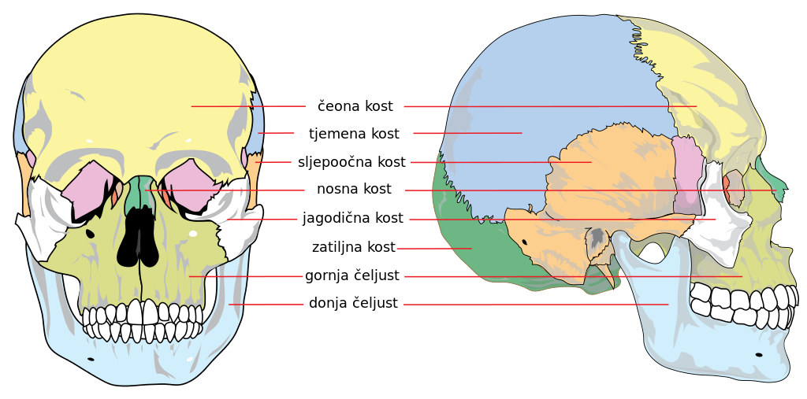

|  |
Kosti glave dijele se na kosti lobanje i kosti lica. Kosti lobanje su pljosnate, međusobno spojene šavovima : grade lobanjsku duplju koja štiti mozak. Lobanju grade 4 neparne i 2 parne kosti. Neparne kosti su: čeona, sitasta, klinasta i potiljačna. Parne su: tjemene i sljepoočne. Kosti lica čine 6 parne kosti i 3 neparne kosti, one oivičavaju otvore usne, očne i nosne duplje. Najveća parna kost je gornja vilica. Sve kosti lica su nepokretno spojene, osim najveće neparne kosti- donje vilice koja je sa lobanjom povezana zglobom. |